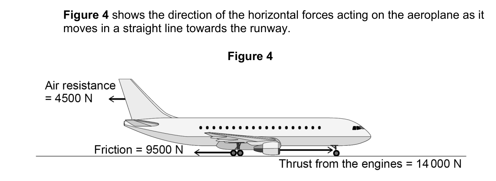

Explore · Science · from first principles
Ten short rooms, from "what is a force?" to explaining why a skydiver stops speeding up. Take your time: about three sessions of 15 minutes (rooms 1–3, 4–6, 7–10). Predict first, then try it.
Room 1 of 10
A force is a push or a pull. That's all. Kicking a ball, the floor holding you up, the Earth pulling you down, a rope pulling a sledge: all forces.
Every force has two things:
So scientists draw a force as an arrow: the arrow points the way the force acts, and a longer arrow means a bigger force.
Slide left of the middle and the push changes direction. The arrow flips.
A book is sitting still on a table. Are there any forces acting on it?
Before we start, a guess. A skydiver jumps out of a plane. At first they speed up, but after a while they stop speeding up and fall at a steady speed. Why do you think they stop speeding up? Any guess is fine. You'll come back to it at the end.
Room 2 of 10
Exam questions expect the proper names. Here are the ones you'll meet most:
Weight: the Earth's gravity pulling an object down. Always points straight down.
Air resistance (also called drag): the air pushing against something moving through it. Always points against the direction of motion.
Friction: surfaces rubbing. Also acts against motion.
Normal contact force: a surface pushing back on whatever is pressing on it (the table pushing up on the book).
Thrust: the driving force from an engine. Tension: the pull in a rope or string. Upthrust: water pushing a boat up.
Contact forces need the objects to touch (friction, air resistance, normal contact force, tension, upthrust, thrust). Non-contact forces act across a gap: weight (gravity), magnetic and electrostatic forces.
A box slides along the floor and slows down. Which force slows it down?
A skydiver is falling downwards. Which way does air resistance push on them?
Which of these is a non-contact force?
This is a free-body diagram: the object as a dot or a simple shape, with an arrow for every force on it. Only two forces matter for a skydiver, and they point in opposite directions. That's the whole story of this journey.
Draw (or describe) the forces on a book sitting on a table. Name each one and say which way it points.
Room 3 of 10
Mass is how much stuff is in you, in kilograms (kg). It's the same wherever you go.
Weight is a force: how hard gravity pulls on that mass, in newtons (N). It depends on where you are.
weight = mass × gravitational field strength
W = m × g On Earth, g = 9.8 N/kg
You fly to the Moon. What changes?
A skydiver has a mass of 80 kg. What is their weight on Earth, in newtons? (g = 9.8 N/kg)
The skydiver falls faster and faster. What happens to their weight?
Explain the difference between mass and weight to someone in Year 6. Use the Moon in your answer.
Room 4 of 10
Most objects have several forces on them at once. What matters is what they add up to. That total is called the resultant force.
A box is pushed right with 30 N. Friction of 30 N acts to the left. What is the resultant force?
A trolley is pushed forwards with 45 N. Friction of 12 N acts backwards. What is the size of the resultant force, in N?
Figure 4 shows the direction of the horizontal forces acting on the aeroplane as it moves in a straight line towards the runway.

Determine the magnitude of the resultant horizontal force on the aeroplane.
Hint: there are two forces pointing backwards. Add those first.
Make up your own example of balanced forces from everyday life. What are the two forces and how do you know they're balanced?
Room 5 of 10
Most people's gut feeling: "if you stop pushing, things stop". Let's test that gut feeling.
Far out in space, away from every planet, there's no air and no friction. A spacecraft is drifting along with its engines off. What happens?
A car drives along a straight motorway at a steady 70 mph. What is the resultant force on it?
Back to the aeroplane from Room 4. You found the resultant force was 0 N.
Describe the motion of the aeroplane as it moves towards the runway.
"You need a force to keep something moving." Explain why this is wrong, using the puck.
Room 6 of 10
Two words first:
Now the rule: a resultant force makes an object accelerate in the direction of the resultant.
Things to try: make the forces equal while it's moving. Then make the resistive force bigger. Then turn the driving force to zero.
A cyclist on a flat road stops pedalling. What happens, and why?
Same push, two trolleys: one empty, one full of shopping. Which speeds up more quickly?
A lorry is going at a steady speed. The driver presses the accelerator harder. Explain what happens, starting with "The driving force increases, so…".
Room 7 of 10
So far the resistive force stayed the same however fast the car went. In real life, air resistance doesn't.
You hold your hand out of a car window. When do you feel the air push hardest on your hand?
Notice how fast the arrow grows: double the speed and the air resistance is about four times bigger. A parachute has a huge area, so it makes enormous air resistance even at low speed.
Drop a flat sheet of paper and an identical sheet scrunched into a ball, from the same height. Which lands first?
What happened in your paper or cupcake-case drop? Which forces were acting, and which one was different between the two?
Room 8 of 10
Now you know everything you need. Weight stays the same. Air resistance grows with speed. The resultant force decides whether the skydiver speeds up. Press Jump and watch the arrows.
The skydiver's mass is 80 kg, so their weight is 80 × 9.8 = 784 N (Room 3). Watch the weight arrow: it never changes.
Two seconds after jumping. The skydiver is still speeding up.
At terminal velocity: falling at a steady speed.
Just after the parachute opens.
Use this to explain your cupcake-case drop from Room 7: why did the stack of 4 fall faster? (Hint: it needed to go faster before air resistance matched its weight.)
Room 9 of 10
An exam explanation is a chain: each link causes the next. AQA gives one mark per link. Tap the links in order.
Tap the first link.
In a world record attempt, a skydiver jumped from a height of 40 km above the Earth.
The skydiver accelerated until reaching terminal velocity.
Explain why the skydiver reached terminal velocity.
Write it in full sentences, in your own words, without looking at the chain above. Join the links with as, until, so.
Tick each point your answer makes. One mark each.
Allow "drag" for air resistance. The most common lost mark: saying air resistance and weight are "there" without saying they become equal. Missed a link? Add it to your answer now.
Which link was hardest to remember, and which room explains it?
Room 10 of 10
The whole journey in one line: forces are arrows → add them up to get the resultant → zero resultant means no change → a resultant means acceleration → air resistance grows with speed until it balances weight → terminal velocity.
You didn't write a guess in Room 1. That's fine.
Now explain it properly, in your own words, without looking back: why does a skydiver stop speeding up? Was your first guess right, partly right, or wrong?
Now do the skydiver questions by hand, on paper, from the Week 3 plus written sheet. Mark it with the mark scheme on the last page.
Ask someone at home to ask you: "Why does a falling object stop speeding up?" Say the whole chain without looking. If you miss a link, they say "and so…?"